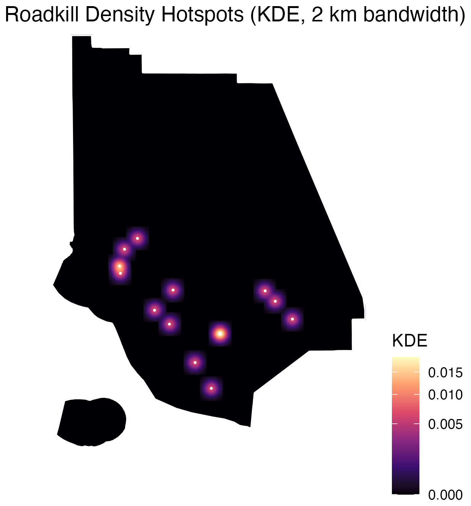

Identifying Habitat Connectivity Gaps Using Wildlife Roadkill Patterns in Ventura County, California
Selected for publication · Journal of Emerging Investigators
Where do animals get hit crossing roads in Ventura County, and what does that say about where their habitat is cut off? I mapped roadkill reports against land cover and the road network to find the spots where wildlife and traffic meet.

The project
Roads break up habitat. They block animals from moving between patches and kill them in collisions. Knowing where those collisions happen can show where connectivity is broken and where wildlife crossings or other fixes would help most.
I mapped iNaturalist roadkill reports from 2020 to 2024 against land cover, protected areas, and the road network in Ventura County. I used kernel density estimation to look for clusters and compared each report's distance to the nearest road with randomly placed points.
Built with R · QGIS · iNaturalist, land cover, and road network data.

What I found
- Roadkill reports clustered in the southern and central parts of the county, near major road corridors and developed areas.
- The northern county, with few roads, showed almost no reports.
- With 13 observations, the results are exploratory, and citizen-science reports are biased toward places people drive.